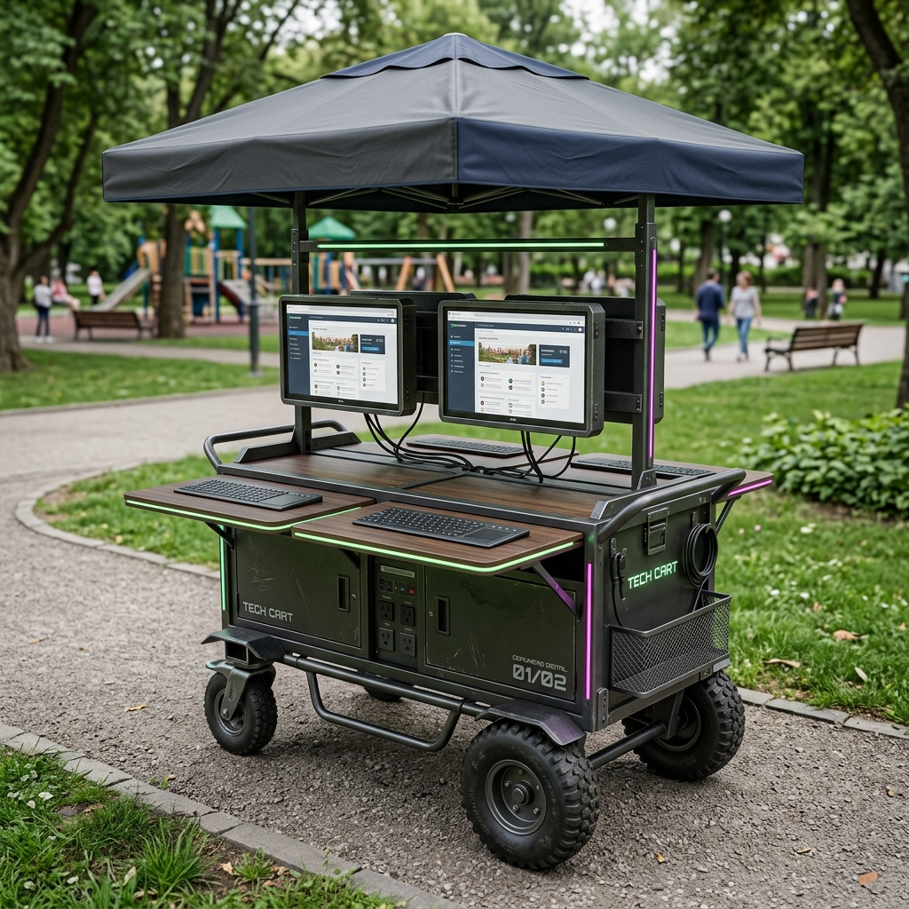
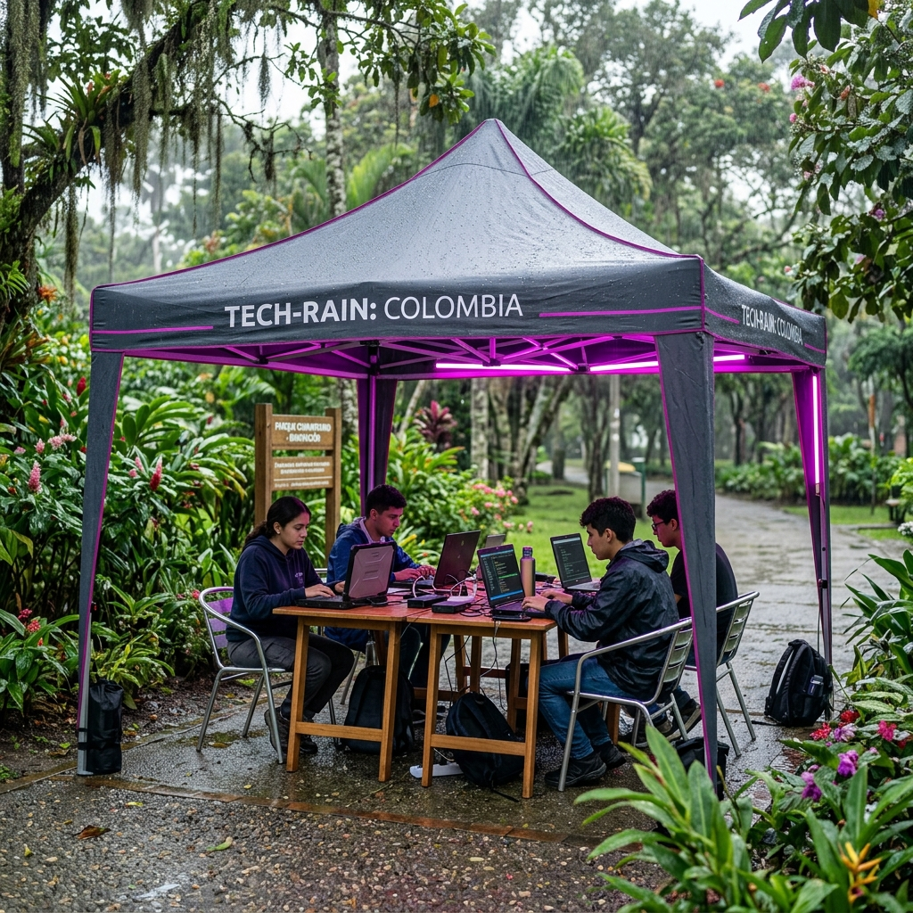
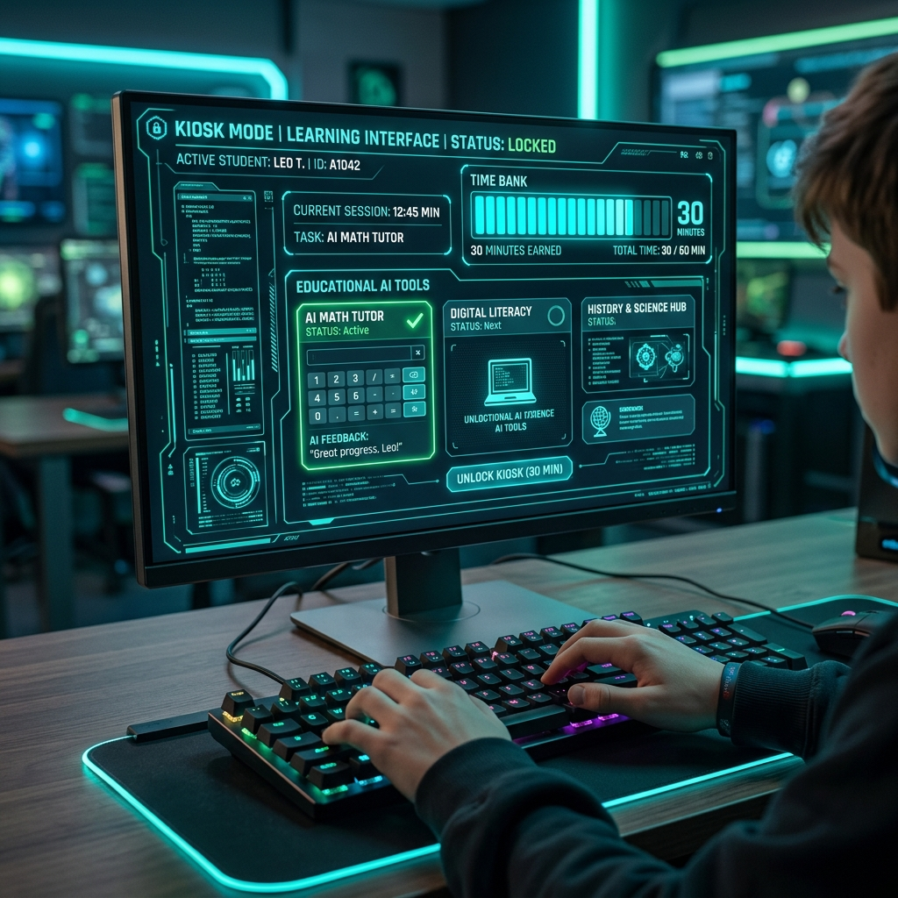

Red de nodos comunitarios en parques que combina economía del
conocimiento, cultura, deporte e IA para regenerar el tejido social — y financiarse sola. Cifras actualizadas con
SMMLV 2026: $1.750.905.
9
Secciones estratégicas
$1.750.905
SMMLV 2026 (Dec. 1469)
Mes 5-7
Punto de equilibrio
40+
Insumos en catálogo
$0
Capital inicial requerido
9/10
Viabilidad con mejoras
👤 Administrador de Módulo — Dato clave 2026
Basado en el SMMLV 2026 ($1.750.905), el modelo aplica una Compensación Flexible por
Resultados. Para no quebrar el proyecto, el administrador gana 1 SMMLV + Bonos de
meta en los meses 3 y 4. Al llegar al mes 6 (equilibrio), salta a 2 SMMLV e inicia
un Pago Retroactivo que le devuelve en cuotas el tiempo que trabajó ad honorem en los meses 1 y
2. El costo total para el mes 6 es ~$5.8 Millones/mes.
Fortaleza
Modelo circular de talento
Los estudiantes aprenden → se vuelven tutores → generan ingresos → reinvierten → atraen más estudiantes. El
administrador los coordina y potencia.
Riesgo crítico
Arrancar con foco, no con todo
Lanzar con 3 líneas núcleo: insumos + tutorías + WiFi. Agregar una línea cada 3 meses. El administrador debe
llegar con el módulo estabilizado, no en el caos del arranque.
Nuevo en v2.0
Catálogo de insumos con precios reales
40+ insumos con precio de costo y venta, margen calculado y descripción del uso en tareas escolares. Kits
armados listos para vender. Ver sección 📦 Insumos.
Escalabilidad
Un módulo = un manual
El primer módulo construye el protocolo para replicar en cualquier parque del país. Con administrador formado
y catálogo estandarizado, el segundo módulo se abre en la mitad de tiempo.
Módulo único · Mes operativo · Cifras 2026 COP
Hoja de Costos
⚠ Cifras actualizadas con SMMLV 2026
Salario mínimo 2026: $1.750.905 + Aux. transporte $249.095 = $2.000.000
ingreso base. Incremento del 23% sobre 2025 (Decretos 1469 y 1470 del 29 dic 2025). Todos los costos laborales
calculados sobre esta base.
Costos Fijos Mensuales
Ítem
Categoría
Mínimo
Básico
Consolidado
Arriendo local 15-25 m²
Infraestructura
$0
$800.000
$1.200.000
Servicios (agua, luz, internet)
Infraestructura
$100.000
$350.000
$520.000
Router WiFi parque (SIM 4G)
Tecnología
$85.000
$85.000
$170.000
Administrador — salario base
Talento CLAVE
$0
$1.750.905
$3.501.810
Carga prestacional admin (~43.65%)
Legal CLAVE
$0
$764.270
$1.528.540
Bonos (Meta de ventas / Retroactivo)
Comisión
$0
$500.000
$800.000
Fondo tutores jóvenes (pool variable)
Talento Tutores
$250.000
$650.000
$1.500.000
Contabilidad / asesoría legal básica
Administrativo
$0
$180.000
$300.000
Plataformas IA (APIs, herramientas)
Tecnología
$60.000
$190.000
$430.000
Marketing / redes sociales
Comercial
$40.000
$130.000
$250.000
Fondo imprevistos (5%)
Reserva
$27.000
$229.000
$387.000
TOTAL FIJOS / MES
$562.000
$5.629.175
$10.587.350
Costos Variables Mensuales
Ítem
Categoría
Mínimo
Básico
Consolidado
Insumos creativos/educativos (inventario)
Comercial
$250.000
$750.000
$1.850.000
Torneos de fútbol (premiaciones, canchas)
Comunitario
$100.000
$250.000
$500.000
Cine en parque (datos, permisos)
Cultural
$60.000
$125.000
$250.000
Materiales talleres / asesorías
Formación
$0
$100.000
$250.000
Transporte / logística
Operaciones
$0
$75.000
$185.000
TOTAL VARIABLES / MES
$410.000
$1.300.000
$3.035.000
$972.000
Total/mes · Mínimo viable
$6.929.175
Total/mes · Básico (c/ admin)
$13.622.350
Total/mes · Consolidado
Inversión Inicial — Dotación
Activo
Cant.
Costo
Prioridad
Proyector portátil 3500 lúmenes
1
$580.000
Alta
Parlante Bluetooth 40W (exterior)
1
$320.000
Alta
Router 4G + SIM datos 20GB/mes
1
$220.000
Alta
Kit insumos creativos arranque
1
$500.000
Alta
Computador portátil reacondicionado (i3)
1
$900.000
Alta
Mesas plegables x4 + sillas x10
1 set
$750.000
Media
Uniformes oficiales (Polos/Chaquetas)
6 und
$390.000
Identidad
Materiales menores (Pistola silicona, etc.)
1 kit
$80.000
Alta
Valla / señalética identidad
1
$260.000
Media
Gastos constitución entidad
—
$380.000
Alta
TOTAL DOTACIÓN MÍNIMA
$4.380.000
💡 Estrategia de dotación sin capital — 2026
Computador: solicitar a empresas tech o colegios con equipos dados de baja.
Proyector: comodato con JAC o biblioteca barrial. Mesas y sillas: gestión
con Alcaldía Local. Uniformes: pueden ser financiados por empresas locales (su logo en la
manga).
Identidad Visual
Uniforme (Prevención de Violencia)
Viste a los jóvenes de autoridad pacífica.
Funciona como escudo social en el parque frente a contextos de violencia o estigma.
Costo de
producción unitario
$65.000
Kit de arranque (6 jóvenes): $390.000
Propuesta de insumos · Precios mercado Medellín 2026
Catálogo de Insumos
Todos los materiales que el módulo vende a estudiantes para hacer
sus tareas. Precios de costo son precios mayoristas (Panafargo, Suescun, distribuidoras Medellín). Los precios de
venta incluyen margen operativo para sostener el módulo. El módulo compra al por mayor y vende al detal.
📊 Lógica del negocio de insumos
Comprar al mayor + vender al detal = margen promedio del 68-75%.
Una inversión de $500.000 en inventario genera $850.000-$1.200.000 en ventas en 2-3 semanas. Los kits armados
por tipo de tarea tienen el mayor margen porque el estudiante paga por la conveniencia de tener todo junto.
Proveedores clave: Panafargo MDE, Suescun, Distrikayser.
Estrategia de compra
Comprar al mayor, vender al detal
Visitar Panafargo (Medellín) o Suescun para precios mayoristas reales
Inventario inicial mínimo: $500.000 en los 5 ítems más pedidos
Reposición semanal basada en ventas — nunca sobre-stockear
Los kits armados se hacen a pedido para tareas específicas del colegio
Negociar crédito a 30 días con el proveedor mayorista desde el mes 2
Top 5 más vendidos
Insumos de alta rotación escolar
Cartulina 1/8 plana — tareas diarias, alta demanda constante
Foami carta colores — proyectos de artística y manualidades
Colores lápiz x12 — útil escolar de compra frecuente
Silicona en barra — consumible de altísima rotación
KIT Cartelera Escolar — exposiciones cada 2-3 semanas por grado
📅 Calendario escolar = calendario de ventas
Enero-febrero: listas escolares (pico máximo, vender kits completos). Marzo-abril: proyectos
de ciencias y sociales (maquetas, dioramas). Mayo-junio: izadas de bandera y exposiciones (carteleras, foami).
Agosto: regreso a clases segundo semestre. Octubre-noviembre: ferias y proyectos finales. Anticipar el
inventario 2 semanas antes de cada pico.
Proyección conservadora · Módulo 1 · 2026
Mapa de Ingresos
Con el SMMLV 2026 en $1.750.905, los precios de tutorías y servicios
se ajustan al poder adquisitivo del barrio. El motor económico sigue siendo tutorías + insumos + servicios IA.
Líneas de Ingreso — Proyección Mensual 2026
Línea
Mecanismo
Mes 1-2
Mes 3-4
Mes 6+
Venta insumos / suministros
Margen 65-80% sobre costo mayorista
$250.000
$750.000
$1.850.000
Tutorías (cuota servicio + fabricación)
$18.000-$35.000/sesión · 20-80 sesiones
$380.000
$1.100.000
$2.950.000
Servicios IA (diseño, automatización)
$90.000-$350.000/proyecto
$0
$500.000
$2.200.000
Asesorías a emprendedores
$60.000/sesión · pack 4 = $180.000
$0
$180.000
$740.000
Torneos de fútbol (inscripciones)
$35.000/equipo · 8-20 equipos
$0
$290.000
$730.000
Patrocinio / publicidad local
Negocio local paga por visibilidad
$0
$120.000
$490.000
Donaciones / convocatorias
Mincultura, Alcaldía, cooperación
$600.000
$600.000
$1.200.000
TOTAL INGRESOS
$1.230.000
$3.540.000
$10.160.000
📈 Viabilidad financiera: Cerrando el Valle de la Muerte
Con el nuevo esquema flexible de salarios, el déficit del mes 3-4 bajó drásticamente de $5.4M a solo ~$3.3M/mes. Este hueco ahora se puede cubrir fácilmente con un capital
semilla pequeño o vendiendo talleres por adelantado. En el mes 6, con ingresos de $10.1M y costos de ~$10.5M, el
módulo entra en equilibrio real operando a tope y devolviendo el "retroactivo" al administrador.
Distribución de Excedentes (Mes 6+)
Al ser entidad sin ánimo de lucro, la utilidad no va a socios, se reinvierte
éticamente:
Destino
%
Descripción (Enfoque Ético)
Fondo Expansión (Nuevo módulo)
25%
Ahorro para abrir el siguiente parque de forma sostenible.
Fondo Bienestar Tutores
20%
Para pagarles cursos (Platzi/Domestika) o subsidiarles internet en casa.
Fondo Operativo Reserva
20%
3 meses de costos fijos en caja (para proteger empleos si hay crisis).
Subsidio Cruzado (Becas)
20%
Financia tutorías y kits 100% gratis para niños sin recursos del barrio.
Mejora Infraestructura Módulo
15%
Nuevos equipos y materiales (Los jóvenes deciden en qué gastarlo).
Análisis estratégico
Viabilidad & Mejoras
6/10
Viabilidad modelo original
9/10
Con mejoras aplicadas
Mes 5-7
Equilibrio proyectado
Lo que está bien — no cambiar
✅ Modelo circular de talento
Estudiante → tutor → ingreso → ciclo. El administrador coordina y potencia este ciclo. Es el motor más
sostenible posible.
✅ IA como línea de ingresos
Diferencial real. Ningún modelo de parque comunitario en Colombia lo está haciendo. Margen alto, bajo costo
de producción.
✅ Catálogo de insumos estructurado
Tener precios claros, kits armados y rotación predecible según calendario escolar convierte los insumos en la
línea más predecible del modelo.
✅ Administrador con salario digno
Pagar bien al administrador (2-2.5 SMMLV) garantiza compromiso, permanencia y calidad. Es el costo más
importante y el más justificado.
Mejoras — implementar de inmediato
Mejora 1 · CRÍTICA
Fases de activación — no todo al tiempo
Fase
Meses
Líneas activas
Fase 0 — Prueba
1-2
Insumos + Tutorías + WiFi parque (Admin Ad Honorem / Capital
Sudor)
Fase 1 — Arranque
3-4
+ Servicios IA + Cine parque + Admin 1 SMMLV + Bono
Cumplimiento
Constituir como Asociación ante Cámara de Comercio (~$380.000 en 2026). Abre: convocatorias de Mincultura,
Alcaldía, cooperación internacional; donaciones con beneficio tributario (Art. 125 ET); credibilidad ante
colegios. Sin personería, el modelo es informal y frágil.
Mejora 3 · ALTA
Alianza con 1 colegio antes de abrir
Visitar el rector del colegio más cercano. Proponer "convenio de remisión": el colegio informa a padres, el
módulo entrega servicio. Sin costo para el colegio, flujo garantizado de estudiantes. En 2026, con el aumento
del 23% en el SMMLV, muchos padres buscan opciones más baratas que las papelerías — el módulo llena ese espacio.
Mejora 4 · MEDIA
Catálogo IA con precios fijos 2026
5 servicios entregables por jóvenes: (1) Logo básico $95.000 · (2) Pack 10 posts $145.000 · (3) Automatización
WhatsApp $180.000 · (4) Presentación comercial $120.000 · (5) Análisis datos $240.000. El alza del SMMLV hace
que los pequeños negocios busquen opciones económicas — el módulo es esa opción.
⚠ Alerta SMMLV 2026: Precios justos sin excluir
El incremento del 23% en el salario mínimo presiona la economía. Ajustar los precios de tutorías un 10-15% es
necesario, pero los niños sin capacidad de pago NUNCA son rechazados; se cubren con el Fondo de Subsidio
Cruzado alimentado por la venta de Servicios IA a empresas.
Política de Cuidado Social (Cero Explotación)
Un proyecto social pierde sentido si quema a su equipo. El modelo está blindado
contra abusos:
Protección al Tutor
Límite de 12 horas semanales
Los tutores jóvenes tienen prohibido trabajar más de 12h/semana.
Su prioridad es la universidad/colegio. El módulo es un apoyo, no un trabajo de tiempo completo disfrazado de
freelance (Gig Economy).
Salud Mental
Cierre innegociable de 1 día
El administrador debe tener 1 día a la semana de desconexión total. Si el
administrador se "quema" (Burnout), el nodo colapsa. Su descanso es una obligación operativa, no un lujo.
Gobernanza
Comité de Inversión Juvenil
El 15% de los excedentes destinados a infraestructura no los decide el
administrador. Los jóvenes tutores votan cada mes qué comprar (ej. ¿Compramos otra Tablet o más marcadores?).
Genera apropiación y liderazgo real.
Bienestar
No solo es dinero
Parte de la compensación de los tutores (Fondo de Bienestar) va a pagarles cursos
premium (Platzi, Coursera) o ayudarles con el pago del internet de sus casas para que sigan formándose en IA y
tecnología.
Mitigación de Riesgos Operativos (Escenario Parque)
Operar tecnología en un espacio público abierto es un reto gigante. El proyecto
resuelve las 3 amenazas principales (Robo, Clima, Mal uso) con este protocolo:
Riesgo: Robo de Equipos
Solución: "Módulo Carrito" y Escudo Social
PROTOTIPO DE INGENIERÍA v1.0 — MÓDULO MULTIPLICA

[1] Montura Monitores VESA
[2] Mesa Plegable Teclados
[3] Chasis Antivandalismo
[4] Eje Todoterreno 8"
Nunca dejamos infraestructura fija. Las pantallas y periféricos
van anclados a un "carrito rodante" asegurado. El administrador lo saca al parque en la mañana y lo guarda en
la Junta de Acción Comunal o casa de un vecino aliado en la noche. Además, cuando las madres y líderes del
barrio ven que el proyecto educa a sus propios hijos, ellos mismos se convierten en la seguridad intocable del
proyecto (Escudo Comunitario).
Riesgo: Clima (Lluvia/Sol)
Solución: Carpa Plegable y "Plan B"

Despliegue táctico: El módulo incluye una "Carpa Araña"
impermeable de armado rápido (3x3m) para proteger del sol y la llovizna. Adicionalmente, el parque elegido
siempre debe tener una "Zona de Refugio" a menos de 20 metros (un coliseo techado, la caseta comunal, o el
alero de una tienda aliada) para ejecutar un Protocolo de Evacuación en menos de 2 minutos si hay
tormenta fuerte.
Riesgo: Desinterés o Mal Uso
Solución: "Kiosk Mode" y Moneda de Tiempo

Cero distracciones: Los computadores están bloqueados (Kiosk Mode)
para abrir únicamente plataformas de IA y estudio; si buscan juegos o redes de ocio, no funcionan. Para
garantizar interés real, el tiempo en pantalla se gana, no se regala. Un joven adquiere 30 minutos de
uso de computador a cambio de ayudarle 15 minutos a un niño más pequeño a leer (sistema de Banco de Tiempo
Comunitario).
Medición de impacto · 2026
KPIs Sociales
Los KPIs miden el impacto real y construyen la narrativa para
donantes, gobierno y medios. Este panel clasifica los indicadores por nivel de criticidad para enfocar la gestión
diaria del administrador.
KPIs de Impacto Social
Importancia
Indicador
Cómo medirlo
Meta mes 3
Meta mes 12
Crítico
Jóvenes activos en el módulo
Registro asistencia semanal
25
120
Alta
Jóvenes convertidos en tutores
Seguimiento individual
3
18
Media
Horas de tutoría entregadas
Registro de sesiones
40h
200h
Crítico
Ingresos generados por jóvenes
Pagos registrados en libro
$350.000
$4.200.000
Media
Emprendimientos asesorados
Formulario de registro
2
24
Alta
Servicios IA vendidos
Registro de proyectos
0
36
Baja
Asistentes a cine en parque
Conteo por evento
80
300/mes
Baja
Equipos en torneos de fútbol
Registro de inscripción
0
16
Media
Insumos vendidos (transacc.)
Libro de caja
40
250
Crítico
Tasa de retención mensual
% que regresa mes siguiente
60%
75%
KPIs de Sostenibilidad Financiera 2026
Importancia
Indicador
Fórmula
Meta mes 6
Crítico
Ratio de autosuficiencia
Ingresos propios / Costos totales
> 80%
Alta
Costo por joven beneficiado
Costo total / jóvenes activos
< $75.000
Alta
Ingreso prom. por tutor joven
Total pagado / nro tutores
> $250.000
Media
Margen bruto insumos
(Venta - costo) / Venta
> 45%
Crítico
Meses de reserva en caja
Reserva / costo mensual
> 1.5
Crítico
Salario admin cubierto 100%
Meses con salario completo
100%
📊 El número que gana cualquier conversación con donantes
A mes 12 con 120 jóvenes activos y costo total de ~$8.9M: costo por joven = $74.000/mes. En 2026, con la inflación,
atender a un menor le cuesta al Estado entre $4M-$10M/año. El módulo lo hace por $888.000/año. Es 5 a 11 veces más eficiente.
De cero a red nacional · 2026
Ruta sin Capital
Premisa honesta
Arrancar sin capital no significa sin recursos. En 2026, con el SMMLV al más alto nivel histórico, hay más
dinero RSE disponible, más convocatorias activas y más micro-emprendedores que necesitan servicios baratos. El
momento es favorable.
Semanas 1-2 · Pre-arranque
El mínimo antes de anunciar
Constituir la Asociación ante Cámara de Comercio con 2-3 asociados fundadores (~$380.000)
Crear perfil Instagram + TikTok. Primeros 3 posts: el por qué del proyecto, historia real
Pedir proyector + parlante en comodato. Comprometerse a devolver en 30 días
Comprar kit de insumos mínimo ($500.000) con dinero propio o préstamo familiar
Hablar con 5 padres del barrio — escuchar qué necesitan, no vender todavía
Semanas 3-4 · Primera actividad
Cine en el parque como lanzamiento
Organizar noche de cine gratis. Difundir por WhatsApp y flyers impresos en negro
Stand con insumos expuestos + QR a Instagram durante el evento
Recoger 20+ números de WhatsApp interesados en tutorías
Documentar todo: fotos, videos, testimonios — el contenido es el primer activo
Mes 1 · Primeras ventas
Insumos + primeras tutorías
Anunciar: "¿Tienes tarea de manualidades? Tenemos los materiales y te ayudamos"
Primera tutoría grupal: 4 estudiantes x $15.000 = $60.000 brutos por sesión de 2h
Visitar rector del colegio más cercano. Presentación de 1 página, pedir 5 minutos
Postular a primera convocatoria: cultura.gov.co y Alcaldía de Medellín
Meta mes 1: $800.000–$1.200.000 (cubre WiFi + insumos + algo más)
Mes 2-3 · Primeros tutores + administrador
Talento interno y primer salario
Identificar 1-2 estudiantes con habilidades fuertes → ofrecerles ser tutores junior (40% de comisión)
Entrenar en herramientas IA básicas: Canva IA, ChatGPT, generadores de imagen
Primer servicio IA vendido: logo o pack de posts para negocio local $90.000–$120.000
Desde mes 3: el administrador empieza a cobrar 1 SMMLV +
bonos para no ahorcar la caja.
Mes 4-6 · Punto de equilibrio
Módulo estable con administrador pagado
Alcanzar ingresos propios > $9.000.000/mes
Formalizar convenio educativo con colegio (carta de respaldo mutuo)
Crear el "Manual de Módulo" — cómo replicar en otro parque
Administrador sube a 2 SMMLV + pago retroactivo de deuda inicial.
Identificar el aliado del segundo módulo en otro barrio
Mes 7-12 · Red de 3 módulos
Escalar con modelo probado
Usar el manual + métricas del módulo 1 para abrir módulos 2 y 3
Postular a convocatorias nacionales (Minciencias, Mincultura) con datos reales
Crear "Red de Módulos" con identidad nacional
Explorar alianza con SENA, Computadores para Educar y universidades
Año 2-3 · Red nacional
Del barrio al país
Modelo de "franquicia social": cualquier líder puede abrir un módulo bajo la marca
Plataforma digital conectando módulos, tutores y catálogo de insumos
Contratos de impacto social con gobernaciones y alcaldías
Postular a Ashoka, GIZ, USAID, Skoll Foundation
Fuentes de financiación · 2026
Ruta de Donantes
En 2026, el aumento del 23% en el SMMLV amplía los presupuestos RSE y
de convocatorias. Es un buen año para buscar recursos. Tres frentes: público (legitimidad), privado (velocidad),
internacional (escala).
Fuentes Públicas — Colombia 2026
Entidad
Programa
Monto aprox.
Cuándo
Alcaldía de Medellín
Cultura Viva Comunitaria / FDL
$5-30M
Mes 2
Mincultura
Convocatorias de Estímulos
$10-50M
Mes 3
SENA
Convenios formación / Fondo Emprender
Capacitación gratis
Mes 1
Computadores para Educar
Dotación tecnológica
Equipos
Mes 2
Minciencias (Colciencias)
Proyectos innovación social
$50-200M
Mes 6
Secretaría Educación Medellín
Jóvenes en Acción / alianzas
Variable
Mes 3
Empresas Privadas — RSE 2026
Con el SMMLV 2026 más alto, los presupuestos RSE de grandes empresas también
crecen. Las donaciones a entidades sin ánimo de lucro tienen beneficio tributario (Art. 125 ET). Argumentar
siempre con KPIs.
Empresa
Qué ofrecer
Potencial
EPM — Empresas Públicas Medellín
Datos de impacto, marca en actividades
Alto
Bancolombia / Fundación Bancolombia
Reportes de emprendedores, storytelling
Alto
Comfama / Comfenalco
Convenio servicios culturales y educativos
Alto
Empresas tech locales (startups)
Licencias software, mentoría técnica
Medio
Panafargo / Suescun (proveedores insumos)
Descuentos mayoristas, crédito a 30 días
Alianza clave
Medios de comunicación locales
Cobertura gratuita a cambio de historias de impacto
Alianza
Cooperación Internacional
Organización
Enfoque
Sitio
Ashoka Colombia
Emprendimiento social innovador
ashoka.org
USAID Colombia
Juventud, educación, paz
usaid.gov
Fundación Avina
Desarrollo sostenible América Latina
avina.net
Skoll Foundation
Emprendedores sociales de impacto sistémico
skoll.org
GIZ — Cooperación Alemana
Proyectos paz y juventud Colombia
giz.de
Para inversores y donantes · Versión 2026
Pitch Deck
8 diapositivas. Datos actualizados con SMMLV 2026 y catálogo de
insumos. Argumento central: somos la intervención social más eficiente por peso invertido en Colombia hoy.
Diapositiva 1 · El Problema
Los jóvenes de barrio tienen talento. El sistema no tiene dónde ponerlos.
7Mjóvenes NINI en
Colombia
Ni estudian ni trabajan. No por capacidad, sino por falta de estructura.
23%subió el costo de
vida en 2026
El SMMLV histórico de $1.750.905 no alcanza para la canasta de $3.000.000.
$0acceso real a
herramientas digitales
La economía del conocimiento crece. Los barrios quedan afuera.
Diapositiva 2 · La Solución
Módulos MULTIPLICA: el parque como plataforma comunitaria autosostenible.
Un nodo físico-digital en parques barriales. No es un CAI. No es caridad. Es un
ecosistema de aprendizaje, creación e ingresos que se paga solo.
Tutorías escolaresVenta de insumosServicios
de IAWiFi gratuitoCine en parqueTorneos deportivosAsesoría emprendedoresTutores
jóvenes pagadosAdministrador con salario digno
Diapositiva 3 · Cómo funciona
El círculo virtuoso del talento barrial
① Atracción
WiFi + cine + torneos llevan a los jóvenes al parque sin fricción.
② Enganche
Tutorías + insumos para tareas crean el primer hábito de asistencia.
③ Desarrollo
Los más habilidosos aprenden IA, diseño, código. Producen servicios vendibles.
④ Ingresos propios
Tutores jóvenes + administrador cobran. El módulo se autofinancia. El ciclo continúa.
Diapositiva 4 · Modelo Financiero 2026
Se autofinancia. Donaciones solo como combustible inicial.
Fuente de ingreso
% mes 6
Tutorías + insumos
48%
Servicios IA
22%
Torneos + cine + patrocinio
12%
Asesorías emprendedores
7%
Donaciones / convocatorias
12%
Costo clave 2026
Valor
SMMLV base
$1.750.905
Costo Fijo Mes 3 (1 SMMLV + Bono)
$5.629.175
Total operación/mes 3
$6.929.175
Ingresos proyectados mes 6
$10.160.000
Equilibrio dinámico en mes 6
El déficit de arranque bajó a $3.3M/mes, logrando que sea financiable sin grandes inversores. Al mes 6 el
módulo sostiene al administrador pagando su deuda.
Diapositiva 5 · Impacto Medible
No prometemos cambiar el mundo. Medimos que lo estamos haciendo.
120
Jóvenes activos año 1
18
Tutores jóvenes pagados
24
Emprendimientos asesorados
200h
Tutorías/mes entregadas
3.600
Asistentes cine/año
75%
Tasa de retención
Diapositiva 6 · Escalabilidad
Un barrio hoy. Una red nacional en 3 años.
Año 1
1 módulo consolidado. Manual operativo. Catálogo de insumos estandarizado.
Admin con salario completo.
Año 2
3-5 módulos en Medellín. Cada uno con su administrador formado en el módulo 1.
Año 3
10-20 módulos en 3-5 ciudades. Plataforma digital. Compra conjunta de insumos.
Por qué escala tan bien
El parque ya existe — no hay infraestructura que construir
El manual es el primer módulo
El catálogo de insumos se comparte entre todos los módulos (volumen = precio menor)
Los tutores jóvenes del módulo 1 son los administradores del módulo 2
Diapositiva 7 · Propuesta de Valor
¿Qué recibe quien apoya a MULTIPLICA?
Para donantes / fundaciones
Impacto social medible con KPIs mensuales en tiempo real
Visibilidad en comunidad y medios locales
Historia de transformación con datos reales (storytelling auténtico)
Modelo replicable que multiplica su inversión
Beneficio tributario Art. 125 ET — donaciones deducibles
Para inversores de impacto
Retorno social medible + retorno reputacional
Modelo autosostenible y escalable con datos reales
Acceso a red de jóvenes talentosos en IA y tecnología
Co-diseño del modelo de expansión
Participación en junta consultiva de la red
Diapositiva 8 · Llamado a la Acción
Lo que necesitamos para arrancar hoy.
$4.380.000
Dotación mínima 2026 (proyector, WiFi, insumos, uniformes de impacto, etc.). Un solo donante o RSE
puede arrancar el nodo.
Alianza educativa
Un colegio que recomiende el módulo a sus estudiantes. Sin costo. Solo voluntad y una firma.
Espacio en comodato
Una JAC, biblioteca o empresa que preste 15m² por 3 meses para demostrar el modelo.
No le pedimos que crea en nosotros.
Le pedimos 3 meses para demostrarle con números reales.
Conexión con el Proyecto Principal
El Ecosistema Vivo
Esta propuesta de valor financiera no es solo teoría. Está anclada
al ecosistema de herramientas tecnológicas funcionales que ya hemos desarrollado. Explora los módulos vivos del
proyecto:
✏️
Software de Tutorías
Pizarra Interactiva MULTIPLICA
El motor matemático y lienzo digital en tiempo real donde
los tutores enseñan a los niños. Cuenta con herramientas de dibujo avanzado y una interfaz diseñada para ser
usada en el Módulo Carrito.
El mapa interactivo geolocalizado que rastrea los nodos de
intervención en los parques de la ciudad, mostrando zonas calientes y la ubicación exacta donde operarán los
módulos.